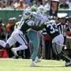

Mainers weigh in on Susan Collins ahead of Brett Kavanaugh vote
All eyes turn to the Maine Republican. Again.
All eyes turn to the Maine Republican. Again.
The FBI has contacted Deborah Ramirez, who’s accused Brett Kavanaugh of sexual misconduct when he was a Yale student, as part of the bureau’s investigation of the Supreme Court nominee.
Opinion | Nancy Gertner
Judge Kavanaugh knows it’s all about performance.
A review of the week’s rhetoric and the facts behind it on multiple fronts.
BARRY CHIN/GLOBE STAFF
YANKEES 8, RED SOX 5
The Sox have dropped three straight, five of seven and seven of their last 11 games.
Giancarlo Stanton has been plunked plenty of times. But by his own home run ball?
Bob Ryan
Winning it all just isn’t that easy, and the margin of error is often very small.
NORA PRINCIOTTI
The former Patriots now play for the Dolphins and will come back to Foxborough for the first time on Sunday.
Michael Swensen for The Boston Globe
“After November 6 I will take a hard look at running for president,” US Senator Elizabeth Warren said at a town hall meeting in Holyoke on Saturday.

The president told supporters in West Virginia that voting can help reject the ‘‘ruthless and outrageous tactics’’ he says Democrats used against Judge Brett Kavanaugh.
MUHAMMAD RIFKI/AFP/Getty Images
A tsunami swept away buildings and killed at least several hundred people on the Indonesian island of Sulawesi, dumping victims caught in its relentless path across a devastated landscape.
The settlement will require Musk to relinquish his role as chairman for at least three years, but he will able to remain as CEO.
A group of state lawmakers are demanding that Columbia Gas act with “a greater sense of urgency” in helping residents rebuild their lives, after fires and explosions two weeks ago.